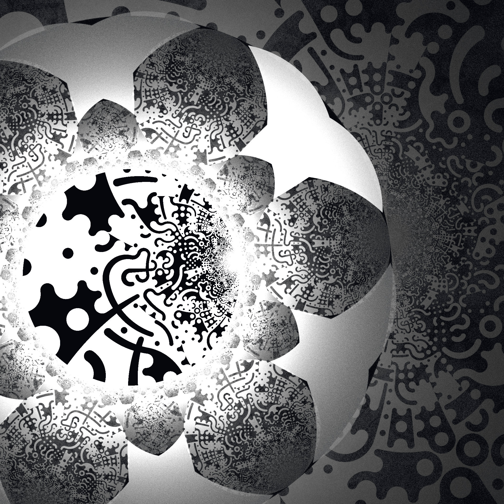

truchet_ms: a variation for Fireheart and Apophysis
truchet_ms draws multi-scale Truchet tiles inside a fractal flame. This page builds the Vodoo flame from the ground up: a single tile, how tiles join, how they split, and how they map onto the hyperbolic disk. Every interactive widget uses the plugin's own tiling code, so a seed here produces the exact same pattern in your flame.

the basic building block
A tile is a square cell containing ink and ground. The dotted border marks the cell boundary, and the bright shapes are that tile's ink.
The faint half-dots just outside the border belong to neighbouring cells. Because every tile places matching ink on its edges, an adjacent tile supplies the other half to complete a full dot, or continues a stroke directly across the seam.
There are two tile sets to compare:
Select a tile on the right to see all four rotations.
matching ink on every edge
Every tile in a set shares the exact same edge layout: two dots at 25% and 75% along each edge in the dot set, or a strip across the middle third in the band set. Any tile can sit next to any other at any rotation without creating a mismatch.
No edge-matching or seam checking is needed. Each cell simply picks a random tile and a random rotation.
Because the seed determines the entire layout, the same seed produces the same mosaic here and in the plugin.
one tile becomes four
Any cell can subdivide into four smaller cells, each with its own tile and rotation, and those sub-cells can split again.
split sets the probability that a cell divides.levels sets the maximum number of subdivision steps.Each split inverts ink and ground, nesting smaller negative-space tiles inside larger positive ones. Sub-tiles also slightly overhang their cell edges, softening transitions between tile scales.
In the animation, an orange cross highlights a cell about to split. Pause it and use step to advance one level at a time.
Experiment with the controls:
using grade to create a fractal
Vodoo lives in a hyperbolic space where features shrink near the boundary. In the upper half-plane, tile size scales with height: the closer a point gets to y = 0, the smaller the tiles become.
grade controls how quickly scale changes. A cell keeps splitting while its size exceeds roughly grade × height (up to levels). Whenever grade is above 0, it takes over from the random split probabilities, so split is ignored.
Nothing exists below the floor, and the pattern repeats horizontally forever, not vertically.
Try it:
The snippet under the widget shows the transform for your current view, using mode 0 (flat plane). In the flame, the coordinate system is centred on the origin, placing the floor at y = −3.
from half-plane to Poincaré disk (mode 3)
Mapping the half-plane into a disk via a Cayley map turns the y = 0 floor into the outer rim. Tiles shrink toward the rim just as they shrank toward the floor.
Because the underlying mosaic repeats horizontally, shifting x slides the pattern smoothly around the disk's boundary. Press slide the plane to see it move.
The snippet is the transform for the disk shown in the widget. mode 3 places points directly inside the unit disk, so your camera should use center="0 0" and a scale around half the output image size.
{p,q} tilings, bubbles, and gaps
A single disk isn't the whole picture. Vodoo arranges a ring of identical disks inside a larger disk using a hyperbolic {p,q} tiling: p bubbles surrounding a centre, with q bubbles meeting at each vertex. Vodoo uses {6,4}.
In {6,4}, each bubble has a linear radius of 0.414214 (√2 − 1), which appears as the coefs of the bubble transform. The spaces between bubbles form gap regions where secondary content is placed.
Four hidden transforms (opacity="0") handle this packing in the flame file. They route points without drawing anything directly; their chaos weights are covered next.
{6,4} bubble scale (0.414214).mobius to map a disk into a gap region.hypertile2 to replicate content across the {6,4} tiling.starblur to generate star-shaped gap detail.xaos weights, drawing transforms, and live flames
Vodoo combines seven transforms that must run in a specific sequence: points are generated by tiles, packed through bubble, gap, hyper and star, and finally rendered by INV or CORE.
By default, a fractal flame picks transforms randomly, meaning a raw tile point could be rendered before ever being packed. xaos enforces the pipeline by assigning transition weights from each transform to every other transform, where 0 means disallowed.
Routing graph. Thick arrows indicate higher transition weights, thin arrows lower ones, and the dashed arrow shows a point resetting after being drawn.
Weight table. Select a transform to highlight it in the triangle and see its outgoing weights.
In the flame file, chaos lists one relative weight per transform in file order (tiles, star, bubble, gap, hyper, CORE, INV). Only proportions matter: 0.176 and 0.044 behave identically to 4 and 1.
Entry, exit, and rendering. tiles starts the path, and CORE and INV complete it.
Only CORE and INV have opacity="1": CORE renders the tile disk directly, while INV inverts the packed structure using spherical. Together, they produce the Vodoo render below.
Three more single-transform truchet_ms flames. Inspect the XML in the viewer, or download the .flame file directly.
{6,4} packing. .flameFurther reading: Docs · API docs · Source on GitHub